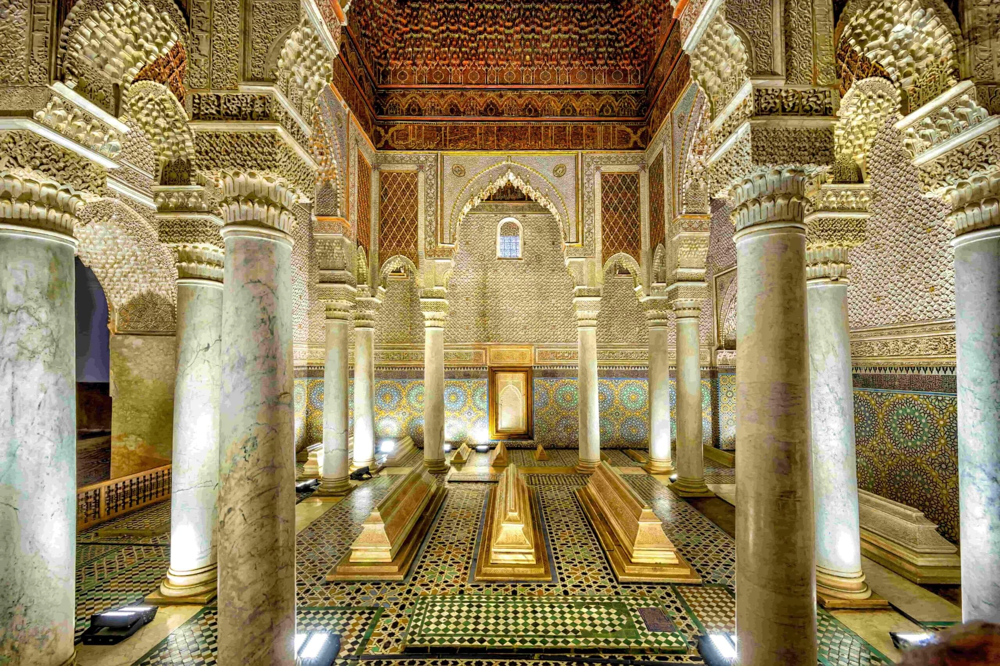
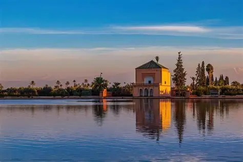
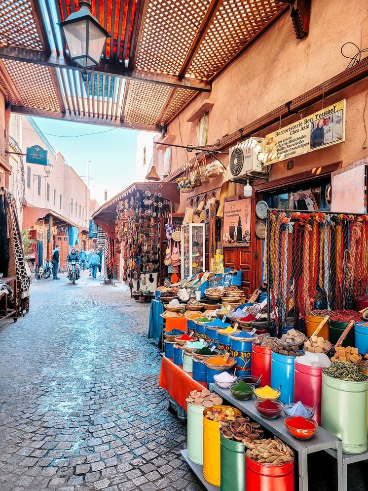

Marrakech is one of Morocco's four imperial cities, home to some of the most remarkable architecture in the Islamic world. From soaring minarets to serene palace gardens, each monument carries centuries of history within its walls. Listed as a UNESCO World Heritage Site since 1985, the medina remains a living museum open to the world.
Koutoubia Mosque — Built in the 12th century under the Almohad dynasty, its 70-metre minaret inspired both the Giralda in Seville and the Hassan Tower in Rabat.
The spiritual heart of Marrakech. Non-Muslims may not enter, but the surrounding gardens and the stunning minaret are open to all. Its proportions (1:5 width-to-height ratio) became the standard for Moroccan minarets for centuries.
Built for Si Moussa, grand vizier of the sultan, the Bahia ("brilliance") Palace spans 8 hectares. Its 160 rooms are decorated with carved cedarwood ceilings, zellij tilework, and ornamental stucco of extraordinary intricacy.
Created by French painter Jacques Majorelle and later restored by Yves Saint Laurent, this 1-hectare garden features over 300 plant species from five continents, set against the iconic "Majorelle Blue" architecture.

16th CenturySealed for centuries and rediscovered in 1917, these royal mausoleums house the remains of Saadian sultans and their families. The Hall of Twelve Columns, with its gilded plasterwork, is one of Morocco's finest examples of Islamic art.

12th CenturyA vast olive grove surrounding a large reflecting pool, backed by the Atlas Mountains. The 16th-century pavilion (menzeh) was used by sultans for rest and reflection. The gardens offer one of Marrakech's most iconic panoramas, especially at sunset.

Medieval · UNESCOThe ancient market district is itself a living monument. Stretching north of Jemaa el-Fna, the souks are divided by trade — leather tanners, spice merchants, weavers, and jewellers — preserving centuries-old guild traditions within the UNESCO-listed medina walls.
Each era left its mark on Marrakech — from the Almoravid founders to modern-day preservation efforts.
Dive deeper into the music, traditions, and living culture that make Marrakech one of the world's most vibrant cities.
Discover the Culture →